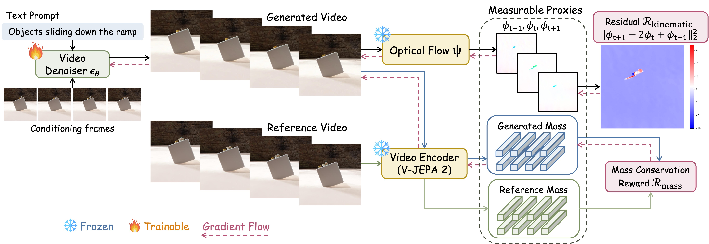
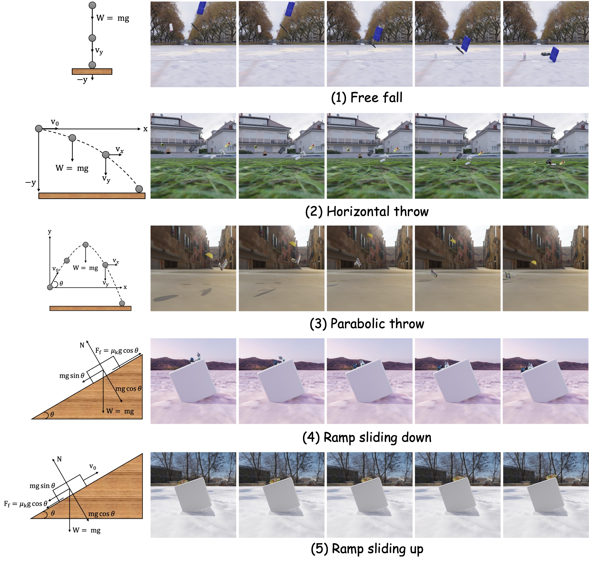
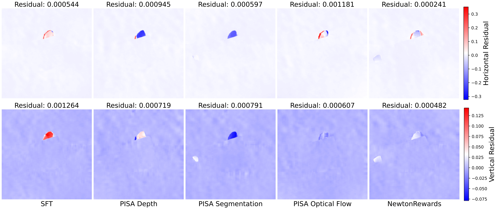

Abstract
Recent video diffusion models can synthesize visually compelling clips, yet often violate basic physical laws-objects float, accelerations drift, and collisions behave inconsistently-revealing a persistent gap between visual realism and physical realism. We propose NewtonRewards, the first physics-grounded post-training framework for video generation based on verifiable rewards. Instead of relying on human or VLM feedback, NewtonRewards extracts measurable proxies from generated videos using frozen utility models: optical flow serves as a proxy for velocity, while high-level appearance features serve as a proxy for mass. These proxies enable explicit enforcement of Newtonian structure through two complementary rewards: a Newtonian kinematic constraint enforcing constant-acceleration dynamics, and a mass conservation reward preventing trivial, degenerate solutions. We evaluate NewtonRewards on five Newtonian Motion Primitives (free fall, horizontal/parabolic throw, and ramp sliding down/up) using our newly constructed large-scale benchmark, NewtonBench-60K. Across all primitives in visual and physics metrics, NewtonRewards consistently improves physical plausibility, motion smoothness, and temporal coherence over prior post-training methods. It further maintains strong performance under out-of-distribution shifts in height, speed, and friction. Our results show that physics-grounded verifiable rewards offer a scalable path toward physics-aware video generation.
Method: NewtonRewards

Physics-Grounded Video Post-Training Pipeline. Our method improves a pre-trained video generator by
using physics-based rewards. Utility models (optical flow \( \Psi \) and V-JEPA 2) process the generated
video
to compute measurable proxies, from which kinematic and mass conservation rewards are derived to enforce
explicit physics constraints.
\[
\textbf{Proposition 1 (Newtonian Kinematic Constraint).}
\]
For an object governed by time-invariant external forces, the discrete second-order derivative of its
optical-flow field predicted by \( \boldsymbol{\Psi} \) vanishes:
\[
\mathcal{R}_{\text{kinematic}} = \left\|
\boldsymbol{\phi}_{t+1} - 2\,\boldsymbol{\phi}_t + \boldsymbol{\phi}_{t-1}
\right\|_2^2 \approx \mathbf{0} \quad.
\]
This is the optical-flow realization of Newton's Second Law in the video domain, enforcing constant
acceleration across all five Newtonian Motion Primitives.
NewtonBench-60K

Illustration of the five NMPs in the proposed NewtonBench-60K dataset. Left: corresponding free-body diagrams showing dominant forces and accelerations. Right: rendered trajectories from our Kubric-based simulator, demonstrating constant-acceleration dynamics in diverse environments.
Evaluation Across Newtonian Motion Primitives

Relative performance change across Newtonian Motion Primitives. Percentage improvements over the SFT baseline across all five NMPs. Depth and Segmentation provide modest gains on simple motions but degrade on ramp dynamics, while Optical Flow shows highly variable and unstable behavior. In contrast, NewtonRewards delivers consistent positive improvements across all primitives, demonstrating robust generalization to diverse Newtonian dynamics.
Qualitative Results @ 16FPS
Free Fall
Horizontal Throw
Parabolic Throw
Ramp Sliding Down
Ramp Sliding Up
Real-world Free Fall
Qualitative Results @ 8FPS
Free Fall
Horizontal Throw
Parabolic Throw
Ramp Sliding Down
Ramp Sliding Up
Real-world Free Fall
Qualitative Results @ 4FPS
Free Fall
Horizontal Throw
Parabolic Throw
Ramp Sliding Down
Ramp Sliding Up
Real-world Free Fall
Constant-Acceleration Residual Analysis

To directly assess whether generated motions obey Newtonian kinematics, we compute the mean discrete second-order residual \( \boldsymbol{\phi}_{t+1} - 2\,\boldsymbol{\phi}_t + \boldsymbol{\phi}_{t-1} \), averaged over all 32 frames of the sliding-down-ramp scenario for each method, as in the Figure above. This residual is zero for ideal constant-acceleration motion and therefore serves as a sensitive diagnostic of dynamical consistency. This figure shows the horizontal (top) and vertical (bottom) residual fields. The SFT baseline and all PISA variants produce strong red/blue activations, indicating noticeable violations of the constant-acceleration constraint. Even methods that use ground-truth visual signals (PISA Depth, Segmentation, and Optical Flow) retain substantial structured residuals, revealing that pixel-level alignment does not translate into correct governing dynamics. In contrast, NewtonRewards produces markedly smoother residual maps with minimal magnitude, achieving the lowest absolute residuals across both axes. These reductions demonstrate that enforcing Newtonian kinematic structure yields trajectories that more closely adhere to true constant-acceleration behavior, beyond what can be captured through appearance- or flow-based supervision alone.
BibTeX
@article{le2025newtonrewards,
title={What about gravity in video generation? Post-Training Newton's Laws with Verifiable Rewards},
author={Minh-Quan Le and Yuanzhi Zhu and Vicky Kalogeiton and Dimitris Samaras},
journal={Under Review},
year={2025},
url={https://cvlab-stonybrook.github.io/NewtonRewards}
}